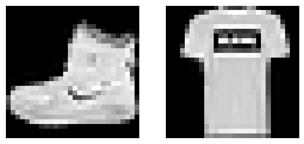
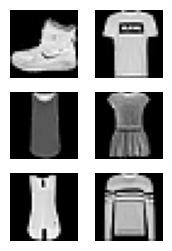

!pip list | grep fastAIcourse
!pip list | grep datasetsfastAIcourse 0.0.91 /home/ben/BENEDICT_Only/Benedict_Projects/Benedict_ML/fastAIcourse
datasets 2.14.4
datasetsforecast 0.0.8!pip list | grep fastAIcourse
!pip list | grep datasetsfastAIcourse 0.0.91 /home/ben/BENEDICT_Only/Benedict_Projects/Benedict_ML/fastAIcourse
datasets 2.14.4
datasetsforecast 0.0.8torch.set_printoptions(precision=2, linewidth=140, sci_mode=False)
torch.manual_seed(1)
mpl.rcParams['image.cmap'] = 'gray'logging.disable(logging.WARNING)name = "fashion_mnist"
ds_builder = load_dataset_builder(name)
print(ds_builder.info.description)Fashion-MNIST is a dataset of Zalando's article images—consisting of a training set of
60,000 examples and a test set of 10,000 examples. Each example is a 28x28 grayscale image,
associated with a label from 10 classes. We intend Fashion-MNIST to serve as a direct drop-in
replacement for the original MNIST dataset for benchmarking machine learning algorithms.
It shares the same image size and structure of training and testing splits.
ds_builder.info.features{'image': Image(decode=True, id=None),
'label': ClassLabel(names=['T - shirt / top', 'Trouser', 'Pullover', 'Dress', 'Coat', 'Sandal', 'Shirt', 'Sneaker', 'Bag', 'Ankle boot'], id=None)}ds_builder.info.splits{'train': SplitInfo(name='train', num_bytes=31296607, num_examples=60000, shard_lengths=None, dataset_name='fashion_mnist'),
'test': SplitInfo(name='test', num_bytes=5233810, num_examples=10000, shard_lengths=None, dataset_name='fashion_mnist')}dsd = load_dataset(name)
dsdDatasetDict({
train: Dataset({
features: ['image', 'label'],
num_rows: 60000
})
test: Dataset({
features: ['image', 'label'],
num_rows: 10000
})
})train,test = dsd['train'],dsd['test']
train[0]{'image': <PIL.PngImagePlugin.PngImageFile image mode=L size=28x28>,
'label': 9}x,y = ds_builder.info.featuresx,y('image', 'label')x,y = 'image','label'
img = train[0][x]
img
xb = train[:5][x]
yb = train[:5][y]
xb, yb([<PIL.PngImagePlugin.PngImageFile image mode=L size=28x28>,
<PIL.PngImagePlugin.PngImageFile image mode=L size=28x28>,
<PIL.PngImagePlugin.PngImageFile image mode=L size=28x28>,
<PIL.PngImagePlugin.PngImageFile image mode=L size=28x28>,
<PIL.PngImagePlugin.PngImageFile image mode=L size=28x28>],
[9, 0, 0, 3, 0])featy = train.features[y]
featyClassLabel(names=['T - shirt / top', 'Trouser', 'Pullover', 'Dress', 'Coat', 'Sandal', 'Shirt', 'Sneaker', 'Bag', 'Ankle boot'], id=None)featy.int2str(yb)['Ankle boot',
'T - shirt / top',
'T - shirt / top',
'Dress',
'T - shirt / top']train['label'][:5][9, 0, 0, 3, 0]def collate_fn(b):
return {x:torch.stack([TF.to_tensor(o[x]) for o in b]),
y:tensor([o[y] for o in b])}collate_fn (b)
dl = DataLoader(train, collate_fn=collate_fn, batch_size=16)
b = next(iter(dl))
b[x].shape,b[y](torch.Size([16, 1, 28, 28]),
tensor([9, 0, 0, 3, 0, 2, 7, 2, 5, 5, 0, 9, 5, 5, 7, 9]))def transforms(b):
b[x] = [TF.to_tensor(o) for o in b[x]]
return btransforms (b)
tds = train.with_transform(transforms)
dl = DataLoader(tds, batch_size=16)
b = next(iter(dl))
b[x].shape,b[y](torch.Size([16, 1, 28, 28]),
tensor([9, 0, 0, 3, 0, 2, 7, 2, 5, 5, 0, 9, 5, 5, 7, 9]))def _transformi(b): b[x] = [torch.flatten(TF.to_tensor(o)) for o in b[x]]def inplace(f):
def _f(b):
f(b)
return b
return _finplace (f)
transformi = inplace(_transformi)r = train.with_transform(transformi)[0]
r[x].shape,r[y](torch.Size([784]), 9)inplace.<locals>._f (b)
tdsf = train.with_transform(transformi)
r = tdsf[0]
r[x].shape,r[y](torch.Size([784]), 9)d = dict(a=1,b=2,c=3)
ig = it emgetter('a','c')
ig(d)(1, 3)class D:
def __getitem__(self, k): return 1 if k=='a' else 2 if k=='b' else 3D ()
Initialize self. See help(type(self)) for accurate signature.
d = D()
ig(d)(1, 3)list(tdsf.features)['image', 'label']batch = dict(a=[1],b=[2]), dict(a=[3],b=[4])
default_collate(batch){'a': [tensor([1, 3])], 'b': [tensor([2, 4])]}def collate_dict(ds):
get = itemgetter(*ds.features)
def _f(b): return get(default_collate(b))
return _fcollate_dict (ds)
dlf = DataLoader(tdsf, batch_size=4, collate_fn=collate_dict(tdsf))
xb,yb = next(iter(dlf))
xb.shape,yb(torch.Size([4, 784]), tensor([9, 0, 0, 3]))b = next(iter(dl))
xb = b['image']
img = xb[0]
plt.imshow(img[0]);
@fc.delegates(plt.Axes.imshow)
def show_image(im, ax=None, figsize=None, title=None, noframe=True, **kwargs):
"Show a PIL or PyTorch image on `ax`."
if fc.hasattrs(im, ('cpu','permute','detach')):
im = im.detach().cpu()
if len(im.shape)==3 and im.shape[0]<5: im=im.permute(1,2,0)
elif not isinstance(im,np.ndarray): im=np.array(im)
if im.shape[-1]==1: im=im[...,0]
if ax is None: _,ax = plt.subplots(figsize=figsize)
ax.imshow(im, **kwargs)
if title is not None: ax.set_title(title)
ax.set_xticks([])
ax.set_yticks([])
if noframe: ax.axis('off')
return ax/home/ben/mambaforge/envs/cfast/lib/python3.11/site-packages/fastcore/docscrape.py:225: UserWarning: Unknown section Other Parameters
else: warn(msg)
/home/ben/mambaforge/envs/cfast/lib/python3.11/site-packages/fastcore/docscrape.py:225: UserWarning: Unknown section See Also
else: warn(msg)
/home/ben/mambaforge/envs/cfast/lib/python3.11/site-packages/fastcore/docscrape.py:225: UserWarning: Unknown section Notes
else: warn(msg)show_image (im, ax=None, figsize=None, title=None, noframe=True, cmap=None, norm=None, aspect=None, interpolation=None, alpha=None, vmin=None, vmax=None, origin=None, extent=None, interpolation_stage=None, filternorm=True, filterrad=4.0, resample=None, url=None, data=None)
Show a PIL or PyTorch image on ax.
| Type | Default | Details | |
|---|---|---|---|
| im | |||
| ax | NoneType | None | |
| figsize | NoneType | None | |
| title | NoneType | None | |
| noframe | bool | True | |
| cmap | NoneType | None | The Colormap instance or registered colormap name used to map scalar data to colors. This parameter is ignored if X is RGB(A). |
| norm | NoneType | None | The normalization method used to scale scalar data to the [0, 1] range before mapping to colors using cmap. By default, a linear scaling is used, mapping the lowest value to 0 and the highest to 1. If given, this can be one of the following: - An instance of .Normalize or one of its subclasses(see :doc: /tutorials/colors/colormapnorms).- A scale name, i.e. one of “linear”, “log”, “symlog”, “logit”, etc. For a list of available scales, call matplotlib.scale.get_scale_names().In that case, a suitable .Normalize subclass is dynamically generatedand instantiated. This parameter is ignored if X is RGB(A). |
| aspect | NoneType | None | The aspect ratio of the Axes. This parameter is particularly relevant for images since it determines whether data pixels are square. This parameter is a shortcut for explicitly calling .Axes.set_aspect. See there for further details.- ‘equal’: Ensures an aspect ratio of 1. Pixels will be square (unless pixel sizes are explicitly made non-square in data coordinates using extent). - ‘auto’: The Axes is kept fixed and the aspect is adjusted so that the data fit in the Axes. In general, this will result in non-square pixels. |
| interpolation | NoneType | None | The interpolation method used. Supported values are ‘none’, ‘antialiased’, ‘nearest’, ‘bilinear’, ‘bicubic’, ‘spline16’, ‘spline36’, ‘hanning’, ‘hamming’, ‘hermite’, ‘kaiser’, ‘quadric’, ‘catrom’, ‘gaussian’, ‘bessel’, ‘mitchell’, ‘sinc’, ‘lanczos’, ‘blackman’. The data X is resampled to the pixel size of the image on the figure canvas, using the interpolation method to either up- or downsample the data. If interpolation is ‘none’, then for the ps, pdf, and svg backends no down- or upsampling occurs, and the image data is passed to the backend as a native image. Note that different ps, pdf, and svg viewers may display these raw pixels differently. On other backends, ‘none’ is the same as ‘nearest’. If interpolation is the default ‘antialiased’, then ‘nearest’ interpolation is used if the image is upsampled by more than a factor of three (i.e. the number of display pixels is at least three times the size of the data array). If the upsampling rate is smaller than 3, or the image is downsampled, then ‘hanning’ interpolation is used to act as an anti-aliasing filter, unless the image happens to be upsampled by exactly a factor of two or one. See :doc: /gallery/images_contours_and_fields/interpolation_methodsfor an overview of the supported interpolation methods, and :doc: /gallery/images_contours_and_fields/image_antialiasing fora discussion of image antialiasing. Some interpolation methods require an additional radius parameter, which can be set by filterrad. Additionally, the antigrain image resize filter is controlled by the parameter filternorm. |
| alpha | NoneType | None | The alpha blending value, between 0 (transparent) and 1 (opaque). If alpha is an array, the alpha blending values are applied pixel by pixel, and alpha must have the same shape as X. |
| vmin | NoneType | None | |
| vmax | NoneType | None | |
| origin | NoneType | None | Place the [0, 0] index of the array in the upper left or lower left corner of the Axes. The convention (the default) ‘upper’ is typically used for matrices and images. Note that the vertical axis points upward for ‘lower’ but downward for ‘upper’. See the :doc: /tutorials/intermediate/imshow_extent tutorial forexamples and a more detailed description. |
| extent | NoneType | None | The bounding box in data coordinates that the image will fill. These values may be unitful and match the units of the Axes. The image is stretched individually along x and y to fill the box. The default extent is determined by the following conditions. Pixels have unit size in data coordinates. Their centers are on integer coordinates, and their center coordinates range from 0 to columns-1 horizontally and from 0 to rows-1 vertically. Note that the direction of the vertical axis and thus the default values for top and bottom depend on origin: - For origin == 'upper' the default is(-0.5, numcols-0.5, numrows-0.5, -0.5).- For origin == 'lower' the default is(-0.5, numcols-0.5, -0.5, numrows-0.5).See the :doc: /tutorials/intermediate/imshow_extent tutorial forexamples and a more detailed description. |
| interpolation_stage | NoneType | None | If ‘data’, interpolation is carried out on the data provided by the user. If ‘rgba’, the interpolation is carried out after the colormapping has been applied (visual interpolation). |
| filternorm | bool | True | A parameter for the antigrain image resize filter (see the antigrain documentation). If filternorm is set, the filter normalizes integer values and corrects the rounding errors. It doesn’t do anything with the source floating point values, it corrects only integers according to the rule of 1.0 which means that any sum of pixel weights must be equal to 1.0. So, the filter function must produce a graph of the proper shape. |
| filterrad | float | 4.0 | The filter radius for filters that have a radius parameter, i.e. when interpolation is one of: ‘sinc’, ‘lanczos’ or ‘blackman’. |
| resample | NoneType | None | When True, use a full resampling method. When False, only resample when the output image is larger than the input image. |
| url | NoneType | None | Set the url of the created .AxesImage. See .Artist.set_url. |
| data | NoneType | None |
help(show_image)Help on function show_image in module __main__:
show_image(im, ax=None, figsize=None, title=None, noframe=True, *, cmap=None, norm=None, aspect=None, interpolation=None, alpha=None, vmin=None, vmax=None, origin=None, extent=None, interpolation_stage=None, filternorm=True, filterrad=4.0, resample=None, url=None, data=None)
Show a PIL or PyTorch image on `ax`.
show_image(img, figsize=(2,2));
fig,axs = plt.subplots(1,2)
show_image(img, axs[0])
show_image(xb[1], axs[1]);
@fc.delegates(plt.subplots, keep=True)
def subplots(
nrows:int=1, # Number of rows in returned axes grid
ncols:int=1, # Number of columns in returned axes grid
figsize:tuple=None, # Width, height in inches of the returned figure
imsize:int=3, # Size (in inches) of images that will be displayed in the returned figure
suptitle:str=None, # Title to be set to returned figure
**kwargs
): # fig and axs
"A figure and set of subplots to display images of `imsize` inches"
if figsize is None: figsize=(ncols*imsize, nrows*imsize)
fig,ax = plt.subplots(nrows, ncols, figsize=figsize, **kwargs)
if suptitle is not None: fig.suptitle(suptitle)
if nrows*ncols==1: ax = np.array([ax])
return fig,axfrom nbdev.showdoc import show_docsubplots (nrows:int=1, ncols:int=1, figsize:tuple=None, imsize:int=3, suptitle:str=None, sharex=False, sharey=False, squeeze=True, width_ratios=None, height_ratios=None, subplot_kw=None, gridspec_kw=None, **kwargs)
A figure and set of subplots to display images of imsize inches
| Type | Default | Details | |
|---|---|---|---|
| nrows | int | 1 | Number of rows in returned axes grid |
| ncols | int | 1 | Number of columns in returned axes grid |
| figsize | tuple | None | Width, height in inches of the returned figure |
| imsize | int | 3 | Size (in inches) of images that will be displayed in the returned figure |
| suptitle | str | None | Title to be set to returned figure |
| sharex | bool | False | |
| sharey | bool | False | |
| squeeze | bool | True | |
| width_ratios | NoneType | None | |
| height_ratios | NoneType | None | |
| subplot_kw | NoneType | None | |
| gridspec_kw | NoneType | None | |
| kwargs |
fig,axs = subplots(3,3, imsize=1)
imgs = xb[:8]
for ax,img in zip(axs.flat,imgs): show_image(img, ax)
@fc.delegates(subplots)
def get_grid(
n:int, # Number of axes
nrows:int=None, # Number of rows, defaulting to `int(math.sqrt(n))`
ncols:int=None, # Number of columns, defaulting to `ceil(n/rows)`
title:str=None, # If passed, title set to the figure
weight:str='bold', # Title font weight
size:int=14, # Title font size
**kwargs,
): # fig and axs
"Return a grid of `n` axes, `rows` by `cols`"
if nrows: ncols = ncols or int(np.floor(n/nrows))
elif ncols: nrows = nrows or int(np.ceil(n/ncols))
else:
nrows = int(math.sqrt(n))
ncols = int(np.floor(n/nrows))
fig,axs = subplots(nrows, ncols, **kwargs)
for i in range(n, nrows*ncols): axs.flat[i].set_axis_off()
if title is not None: fig.suptitle(title, weight=weight, size=size)
return fig,axsget_grid (n:int, nrows:int=None, ncols:int=None, title:str=None, weight:str='bold', size:int=14, figsize:tuple=None, imsize:int=3, suptitle:str=None, sharex=False, sharey=False, squeeze=True, width_ratios=None, height_ratios=None, subplot_kw=None, gridspec_kw=None)
Return a grid of n axes, rows by cols
| Type | Default | Details | |
|---|---|---|---|
| n | int | Number of axes | |
| nrows | int | None | Number of rows, defaulting to int(math.sqrt(n)) |
| ncols | int | None | Number of columns, defaulting to ceil(n/rows) |
| title | str | None | If passed, title set to the figure |
| weight | str | bold | Title font weight |
| size | int | 14 | Title font size |
| figsize | tuple | None | Width, height in inches of the returned figure |
| imsize | int | 3 | Size (in inches) of images that will be displayed in the returned figure |
| suptitle | str | None | Title to be set to returned figure |
| sharex | bool | False | |
| sharey | bool | False | |
| squeeze | bool | True | |
| width_ratios | NoneType | None | |
| height_ratios | NoneType | None | |
| subplot_kw | NoneType | None | |
| gridspec_kw | NoneType | None |
fig,axs = get_grid(8, nrows=3, imsize=1)
for ax,img in zip(axs.flat,imgs): show_image(img, ax)
@fc.delegates(subplots)
def show_images(ims:list, # Images to show
nrows:int|None=None, # Number of rows in grid
ncols:int|None=None, # Number of columns in grid (auto-calculated if None)
titles:list|None=None, # Optional list of titles for each image
**kwargs):
"Show all images `ims` as subplots with `rows` using `titles`"
axs = get_grid(len(ims), nrows, ncols, **kwargs)[1].flat
for im,t,ax in zip_longest(ims, titles or [], axs): show_image(im, ax=ax, title=t)show_images (ims:list, nrows:int|None=None, ncols:int|None=None, titles:list|None=None, figsize:tuple=None, imsize:int=3, suptitle:str=None, sharex=False, sharey=False, squeeze=True, width_ratios=None, height_ratios=None, subplot_kw=None, gridspec_kw=None)
Show all images ims as subplots with rows using titles
| Type | Default | Details | |
|---|---|---|---|
| ims | list | Images to show | |
| nrows | int | None | None | Number of rows in grid |
| ncols | int | None | None | Number of columns in grid (auto-calculated if None) |
| titles | list | None | None | Optional list of titles for each image |
| figsize | tuple | None | Width, height in inches of the returned figure |
| imsize | int | 3 | Size (in inches) of images that will be displayed in the returned figure |
| suptitle | str | None | Title to be set to returned figure |
| sharex | bool | False | |
| sharey | bool | False | |
| squeeze | bool | True | |
| width_ratios | NoneType | None | |
| height_ratios | NoneType | None | |
| subplot_kw | NoneType | None | |
| gridspec_kw | NoneType | None |
yb = b['label']
lbls = yb[:8]names = "Top Trouser Pullover Dress Coat Sandal Shirt Sneaker Bag Boot".split()
titles = itemgetter(*lbls)(names)
' '.join(titles)'Boot Top Top Dress Top Pullover Sneaker Pullover'show_images(imgs, imsize=1.7, titles=titles)
class DataLoaders:
def __init__(self, *dls): self.train,self.valid = dls[:2]
@classmethod
def from_dd(cls, dd, batch_size, as_tuple=True, **kwargs):
f = collate_dict(dd['train'])
return cls(*get_dls(*dd.values(), bs=batch_size, collate_fn=f, **kwargs))DataLoaders (*dls)
Initialize self. See help(type(self)) for accurate signature.